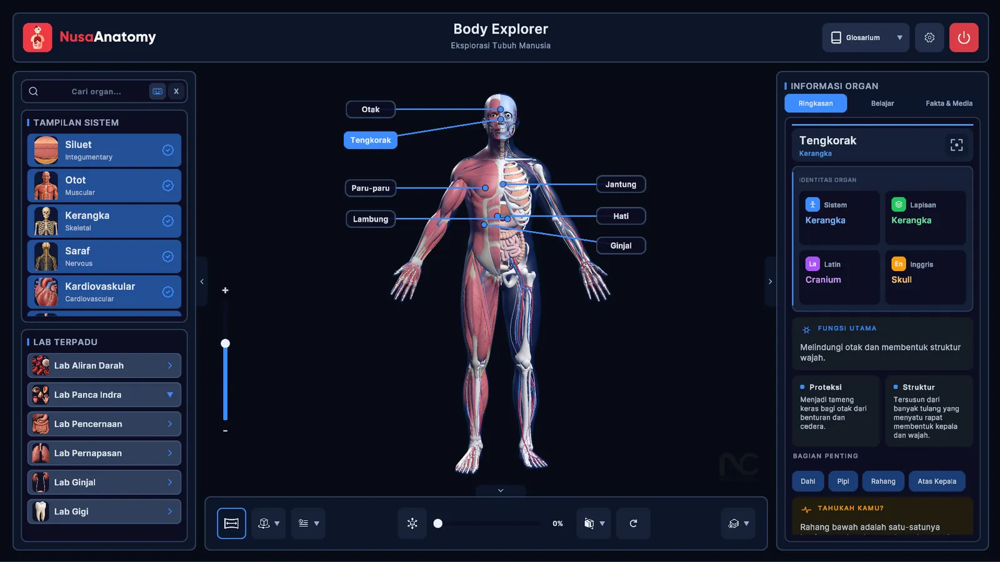
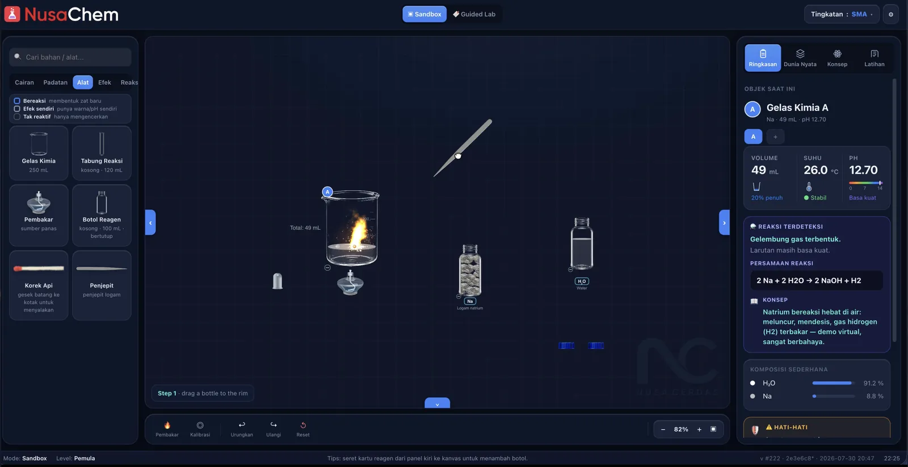
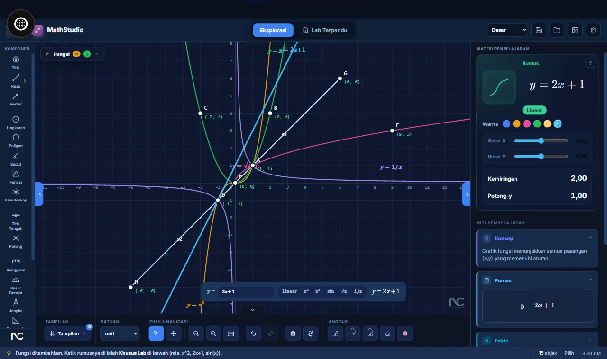
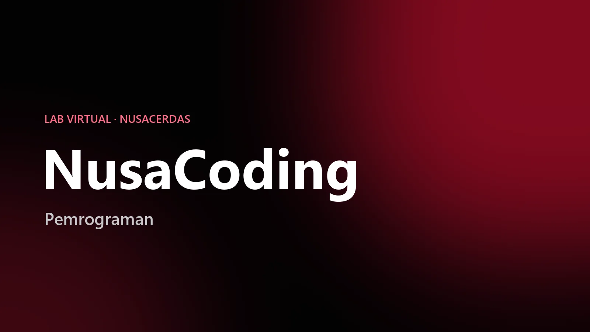
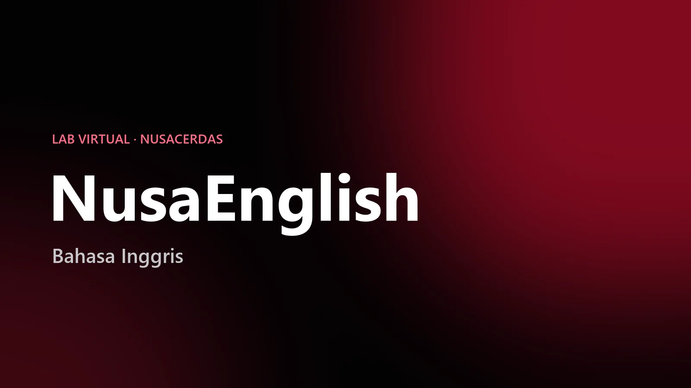

Cerdas Mengajar.
Cerdas Belajar.
Sistem Operasi Ruang Kelas Indonesia. Satu-satunya platform terintegrasi yang membuka potensi penuh 1,5 juta Papan Interaktif — bekerja sempurna tanpa internet.
Cerdas.
Mengajar.
Sistem operasi yang membuka potensi penuh ruang kelas Indonesia.
Tantangan Nyata Guru Indonesia.
Setiap hari, jutaan guru menghadapi hambatan ini di kelas mereka. Inilah yang ingin kami selesaikan.
Waktu Terbuang untuk Membuat Soal & Menilai
Guru berjam-jam membuat soal dari nol — lalu mengoreksi satu per satu. Dengan 100.000+ bank soal dari NusaCerdas AI, buat soal tinggal pilih & koreksi otomatis.
Ketergantungan Internet
Lebih dari 80% sekolah memiliki internet tidak stabil. Software berbasis cloud berhenti saat koneksi terputus — pelajaran ikut berhenti, investasi sia-sia.
Konten yang Berserakan
Guru harus berpindah antara 5–10 aplikasi berbeda hanya untuk satu sesi mengajar. Konteks hilang, fokus terpecah, kelas kehilangan momentum.
Siswa Tidak Terlibat & Kurang Antusias
Metode satu arah membuat siswa kehilangan fokus. Generasi digital butuh pengalaman belajar yang lebih hidup — papan tulis statis sudah tidak cukup.
Infrastruktur Ruang Kelas Indonesia.
Bukan sekadar aplikasi — Sistem Operasi pertama untuk SmartClass Indonesia. Bekerja sempurna dengan atau tanpa internet.
Offline-First
Berfungsi sempurna tanpa internet. Dirancang khusus untuk 80% sekolah dengan koneksi tidak stabil — pelajaran tidak pernah berhenti.
Konten Siap Pakai
15+ aplikasi interaktif untuk sains, matematika, fisika, budaya, agama — sesuai K-13 & Kurikulum Merdeka. Tidak perlu buat dari nol.
Pengalaman Terpadu
Semua alat dalam satu ekosistem — buku digital, kuis interaktif, lab virtual, papan tulis digital. Satu antarmuka, alur mulus.
Kuis Interaktif
100.000+ bank soal. Pembuatan instan dengan AI. Koreksi dan nilai keluar otomatis & instan — penghematan 90% waktu guru.


Dasbor yang menghidupkan kelas.
Lagu kebangsaan, pengatur waktu kelas otomatis, dan pesan siaran langsung pemerintah — semuanya dalam satu antarmuka cerdas.
Platform terpadu untuk semua aplikasi.
Lab virtual yang melampaui buku teks.
Wawasan real-time untuk kepala sekolah.
Infrastruktur Pembelajaran Modern.
Modul-modul inti yang membentuk fondasi pengalaman ruang kelas — dari dasbor hingga analitik real-time.

NusaHome
Dasbor cerdas dengan lagu kebangsaan, pengatur waktu kelas otomatis, dan pesan siaran langsung pemerintah.

NusaAcak
Pengambilan angka secara acak yang dapat dibatasi sesuai kebutuhan membuat angka yang dipilih menjadi objektif.

NusaVote
Fitur pemungutan suara yang dapat digunakan guru dan siswa untuk memutuskan pilihan dengan bermusyawarah.

NusaTimer
Stopwatch & Timer yang dapat digunakan untuk membuat batasan waktu aktivitas di kelas.

NusaLagu
Pustaka lagu yang berisi kumpulan lagu daerah dan nasional dengan fitur Live Lyric (Karaoke).

NusaPing
Dengan instan dan otomatis mengukur kecepatan internet yang terkoneksi dengan perangkat.

NusaScene
Wallpaper dinamis yang menggambarkan dunia nyata dan berubah sesuai dengan hari raya di Indonesia.

NusaMessage
Saluran pesan resmi untuk komunikasi langsung dari lembaga pemerintah kepada siswa dan guru.
NusaAnalytic
Analitik cerdas untuk memantau, mengelola, dan mengoptimalkan penggunaan aplikasi melalui data real-time.

NusaNote
Pencatat digital dengan instrumen pengukuran, alat geometri, ekspor PDF, dan putar ulang pelajaran.
Pembelajaran 3D yang tidak bisa dilakukan buku teks.
Mengganti diagram datar dengan simulasi 3D imersif. Mengubah siswa pasif menjadi penjelajah aktif.

NusaAnatomy
Eksplorasi mendalam tubuh manusia menggunakan model 3D interaktif yang detail.

NusaBiology
Pembelajaran biologi imersif melalui visual 2D & 3D tentang organisme dan konsep lab.

NusaAnimal
Pengalaman belajar hewan interaktif menggabungkan pengetahuan ilmiah dengan keanekaragaman hayati.

NusaPlanet
Eksplorasi tata surya 3D interaktif dengan fenomena astronomi yang memukau.

NusaPeriodic
Tabel periodik interaktif menghubungkan unsur kimia dengan produk dan aplikasi sehari-hari.

NusaChemical
Eksperimen kimia virtual yang aman dengan reaksi interaktif dan modul lab siap pakai.

NusaPhysic
Laboratorium fisika virtual tak terbatas — mekanika, listrik, magnetisme, optik dalam simulasi presisi.

NusaMath
Pembelajaran matematika interaktif dengan modul siap pakai dan visualisasi 3D real-time.

NusaCoding
Belajar berpikir komputasional dan dasar pemrograman secara interaktif, langsung di Papan Interaktif.

NusaEnglish
Belajar kosakata dan bahasa Inggris sehari-hari secara interaktif, dirancang untuk dikerjakan bersama di kelas.
Konten dibangun untuk Indonesia.
Pesaing global tidak memahami konteks lokal. Kami membangun konten secara spesifik untuk budaya dan kurikulum Indonesia.

NusaBook
Database masif buku teks offline untuk semua tingkatan — SD hingga SMK, tanpa internet.

NusaHub AI
Platform terpusat untuk mengintegrasikan semua aplikasi pembelajaran dan selaras dengan metode pengajaran guru.

NusaKids
Permainan pembelajaran kreatif yang memadukan budaya, seni, dan pendidikan dasar untuk anak usia dini.

NusaMuslim
Paket edukasi Islam dengan Iqro interaktif, animasi kisah Nabi, dan panduan sholat sempurna.

NusaMap
Eksplorasi dunia 3D interaktif dengan landmark negara, wawasan budaya, dan mata uang.

NusaNet
Pustaka jaringan berbasis intranet untuk konektivitas multi-perangkat tanpa akses internet.
Ubah penilaian membosankan
menjadi acara kelas favorit.
Saat kuis berubah dari kertas ujian menjadi permainan langsung di papan tulis, semua siswa berebut menjawab. Antusiasme datang. Fokus kembali. Pembelajaran menempel.


Format game di papan interaktif
Leaderboard real-time, timer dramatis, pilihan jawaban warna-warni. Siswa berlomba menjawab — partisipasi seluruh kelas, bukan hanya yang berani angkat tangan.
Pembuatan soal instan dengan AI
Guru tinggal pilih topik dan tingkat kelas — AI menghasilkan soal berkualitas dari 100.000+ bank soal terkurasi. Yang biasanya butuh berjam-jam selesai dalam hitungan menit.
Penilaian otomatis & feedback langsung
Tidak ada lagi mengoreksi semalaman. Skor keluar saat itu juga, lengkap dengan analisis: soal mana yang paling sulit, siswa mana yang perlu pendampingan tambahan.
Berjalan sempurna tanpa internet
Seluruh permainan kuis terjadi di papan interaktif itu sendiri. Siswa tidak butuh smartphone atau koneksi data — inklusif untuk setiap sekolah, di mana pun lokasinya.
untuk persiapan & koreksi
siap pakai, AI-ready
vs. metode tradisional
hasil keluar instan
"Saat kuis menjadi acara yang ditunggu — bukan tes yang dihindari — itulah saat pembelajaran benar-benar terjadi."
Kenapa Sekolah Memilih NusaCerdas?
Perbedaan nyata yang dirasakan ratusan sekolah Indonesia setelah berpindah ke NusaCerdas.
Sebelum
Tanpa sistem terintegrasi
- Internet putus — pelajaran berhenti total
- IFP mahal hanya jadi layar TV biasa
- Guru berjam-jam buat & koreksi soal manual
- Buka 5–10 aplikasi berbeda tiap hari
- Konten tidak sesuai kurikulum nasional
Dengan NusaCerdas
Satu ekosistem terintegrasi
- Offline-first — berjalan tanpa internet
- IFP berubah jadi alat pengajaran cerdas
- 90% hemat waktu persiapan & penilaian dengan AI
- Semua dalam satu ekosistem terintegrasi
- Sesuai K-13 & Kurikulum Merdeka
Terbukti di Ruang Kelas Indonesia.
Tujuh tahun riset dan pengembangan. Ratusan kelas. Satu fokus: pendidikan Indonesia.
Sejak 2019
Diterapkan dan diuji di ratusan kelas nyata di seluruh Indonesia. Product-market fit tercapai. Bukan janji — bukti.
Merah Putih
Dikembangkan oleh talenta terbaik Indonesia, di Indonesia, untuk Indonesia.
SmartClass™
Satu-satunya platform kelas terintegrasi yang bekerja tanpa internet di Indonesia. Standar yang membentuk dekade berikutnya.
Dan masih banyak lagi.
Ratusan modul pembelajaran yang mencakup semua mata pembelajaran.

Kardiovaskular
Materi peredaran darah & jantung.

In-Depth Breakdown
Pembahasan mengenai bagian-bagian sel pada kulit.

X-ray Vision
Bagian pada model 3D dapat ditampilkan secara x-ray.

Dunia Mikroskopik
Pembahasan mendalam mengenai dunia mikroskopik seperti bakteri, sel, hingga struktur botani.

Virus
Pembelajaran seputar struktur sel virus.

3D Highlighting
Model 3D terpisah berkualitas tinggi.

Ragam Habitat
Eksplorasi anatomi hewan yang berbeda habitat.

Animasi Akurat
Animasi yang secara akurat menggambarkan bagaimana hewan bergerak.

Real-time Experiment
Eksperimen dengan efek yang langsung bisa diamati.

Ratusan Instrument
Ratusan peralatan yang dapat digunakan secara langsung tanpa batas.

Tanpa Bahaya, Tanpa Biaya
Lakukan eksperimen yang berbahaya sekalipun tanpa perlu takut resiko keselamatan dan biaya.

Eksperimen yang Akurat
Tentukan unsur yang akan diuji dengan volume yang dapat disesuaikan.
Suara dari mereka yang mengajar setiap hari.
Begitu ada pandemi, NusaCerdas menjadi andalan sekali. Lebih efisien menjangkau teman-teman — kita bisa langsung melakukan pembelajaran secara masif ke berbagai daerah.
NusaCerdas sangat membantu dalam proses mengajar di kelas. Materi yang dibawakan dapat disimpan dan dibagikan ke siswa sehingga belajar lebih efektif.
Dengan NusaCerdas banyak perbedaan yang didapatkan, terutama dalam menyampaikan materi — pembelajaran menjadi lebih interaktif dan menyenangkan.
Siap membawa kelas Anda
ke level berikutnya?
Jadwalkan demo eksekutif untuk sekolah atau yayasan Anda. Tim kami akan menyiapkan presentasi yang disesuaikan dengan konteks institusi.